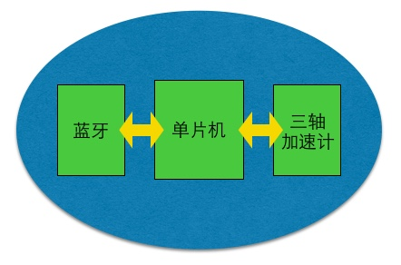

物联网提供了多维度的数据获取方式，这给商业带来了前所未有的价值。比如，人寿保险公司通过向投保者派送智能手环，获知他们是不是经常运动、作息是否规律等数据，继而分析出投保者的身体健康状态，调整复杂的保费计算公式，获取新的盈利增长点。
现在市面上已经有不同形式的智能手环、脚环、腰带、甚至鞋子，它们都可以为商业机构提供源源不断的多维数据，那么还有什么问题需要解决呢？
我们看到很多产品都是以通用性为目的设计的，老少皆宜、男女通吃。然而，很多时候，通用的产品满足不了需求，还需要我们根据特定场景重新设计，比如，一个体操老师希望看到学生每天倒立练习了多少时间，起到教学督促的目的；或者，一个养猪大户希望看到每只猪仔每天的活动量，从而打出“健康猪仔”的市场口号。
以上例子中，通用的智能手环测量不了一个人是否在倒立，给人用的穿戴设备也没有办法测量一只猪仔的卡路里。如果仔细分析，其中又有很大的“共性”，如底层的硬件电路、传感器驱动、单片机系统层软件、设备和APP之间的蓝牙数据接口等。而那些差异化的“个性”，则体现在例如算法、APP、云服务等方面，这些才是每个产品或者每个创业公司的核心价值。
物联网中很多小众而高附加值的碎片化应用，如果每次都要从无到有的搭建这些“共性”部分，成本非常高。于是，本着避免重复“造轮子”的原则，我们开发了这么一个平台，它可以记录人体、动物等宿主的运动状态，开发者通过参数调整或者重新构建算法快速开发出自己的可穿戴产品。
从硬件角度说，该开发平台包含了MCU单元、蓝牙单元和三轴加速度计单元，其中MCU单元和蓝牙单元集成于主芯片Nordic nRF51822之中，三轴加速度计选用ST LIS2DH12。此外，JUMA可批量提供PCBA，用户无需亲自参与供应链管理、硬件采购、生产代工等事宜。
从软件角度来说，这个平台整合了JUMA SDK，它真正意义上实现了低功耗，如果使用SDK编程框架来开发应用，理论上，一颗CR2032的纽扣电池可以为其续航1年以上。
以下展示使用该平台获取原始的三轴加速度计数据：
算法
蓝牙
移动端
功耗
硬件
软件
硬件
售后
请发邮件至hello@jumacc.com，客服人员会和您联系。